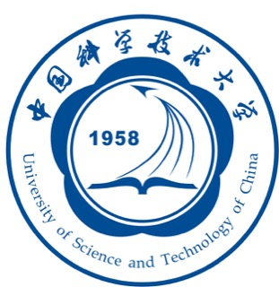

About Me
Wang Yuhang
Graduate Student in Computer Science at USTC
I am currently a graduate student in the School of Computer Science and Technology at the University of Science and Technology of China (USTC), where I work in the MLSys Lab under the supervision of Prof. Cheng Li. Before starting my graduate studies, I received my Bachelor of Engineering in Computer Science and Technology from USTC in 2026.
My research focuses on machine learning systems and computer systems, particularly the infrastructure that makes large-scale AI workloads efficient and reliable. I am interested in problems across distributed execution, storage and resource management, operating systems, and compiler and runtime optimization.
I approach these problems across the software-hardware boundary, studying systems through implementation, measurement, and performance analysis. My goal is to build practical systems that translate high-level abstractions into efficient execution on real machines.
Research Interests
ML Systems
Efficient training and inference infrastructure for modern machine learning and large language model workloads.
Distributed Systems
Scalable execution, storage, and resource management for data-intensive systems.
Operating Systems & Kernels
Scheduling, memory management, and the mechanisms connecting software to hardware.
Compilers & Runtimes
Cross-layer optimization from high-level programs and models to dependable machine execution.
Honors & Awards
-
First Prize, National Finals
National Student Computer System Capability Competition · Compiler System Design Contest (Huawei BiSheng Cup)
-
Yuanqing Scholarship
School of Computer Science and Technology, USTC
-
Outstanding Student Scholarship
University of Science and Technology of China
-
Outstanding Student Scholarship
University of Science and Technology of China
-
Outstanding Student Scholarship
University of Science and Technology of China
Education

2026 - Present
University of Science and Technology of China
Graduate Student · School of Computer Science and Technology
Member of the MLSys Lab, advised by Prof. Cheng Li.
2022 - 2026
University of Science and Technology of China
Bachelor of Engineering in Computer Science and Technology
School of Computer Science and Technology
2019 - 2022
Puyang First Senior High School
Senior High School